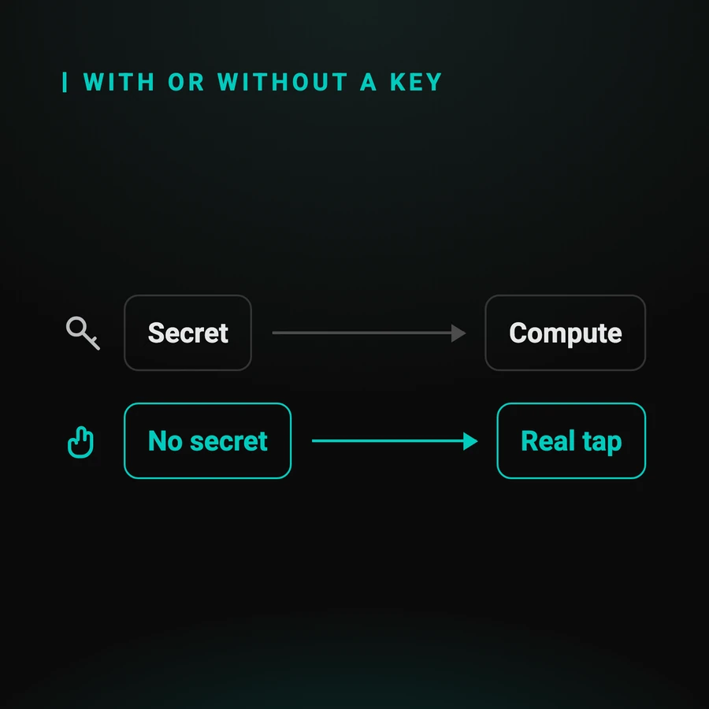

Automating 2FA without a shared secret
The classic route is to obtain a test account's seed and recompute its code. It works, and it assumes two things: that a seed exists, and that someone hands it to you. This guide covers the journeys where neither is true.
By Sylvain Perez, creator of Q-Bot. Updated
Why is a shared secret a problem?
Because it is an authentication secret like any other. Once it enters your test pipeline you have to store it, distribute it to runners, rotate it, and answer for it if it leaks. A six-digit code turns into a management obligation.
This is not an objection on principle: it is a cost, and it is paid somewhere other than in the test.
- it has to be stored somewhere your runners can read
- it has to be rotated like any other secret, with the procedure that comes with it
- you have to be able to say, in a review, who has access and since when
The page on security and test data sets out what a review asks on that exact point.
What exactly does the TOTP standard assume?
That a secret was shared between the service and the device at enrolment, and that this secret plus the current time is enough to produce the code. That is written into RFC 6238, and it is what lets a library stand in for the phone.

RFC 6238 describes a time-based one-time password: the service and the device hold the same seed, and each computes the same code at the same instant.
Two consequences, and the second is the one people forget: if you hold the seed, no device is needed; and if you do not, no computation is possible. There is no third case.
It is also the third route Selenium's documentation recommends, and this is precisely its condition of use.
Which journeys have no seed to obtain?
Those where the second factor is not a computed code. A request pushed to the enrolled device, a code displayed only inside the app, a QR code to scan: in those three cases there is no seed anyone could hand you.
The three families, and what characterises them:
- a request to approve: the secret never leaves the device, which is the point of the scheme
- a displayed code and nothing else: it exists, but nowhere your test can read it
- a QR code: the information travels through an optical channel, not a computation
Sovereign identity apps belong to the first family: the LuxTrust guide works through a complete case.
How do you clear the step without a seed?
By tapping for real. An Android phone wired over USB and driven through ADB: every tap lands on the physical screen, in the genuine app. There is nothing to compute, therefore nothing to hold, and no secret enters your test pipeline.
The scenario is built with the mouse on a screenshot of the app screen: numbered tap points and waiting times, with no script to write. Your test then triggers the scenario with an HTTP call.
The endpoints are detailed on the technical page, and the three possible approaches sit side by side on the reference page.
Scope: Android only, no iOS, and one wired device per box. The driving relies on ADB, which has no equivalent on iPhone.